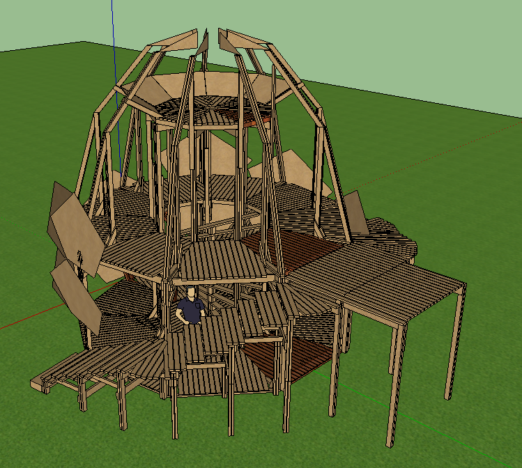
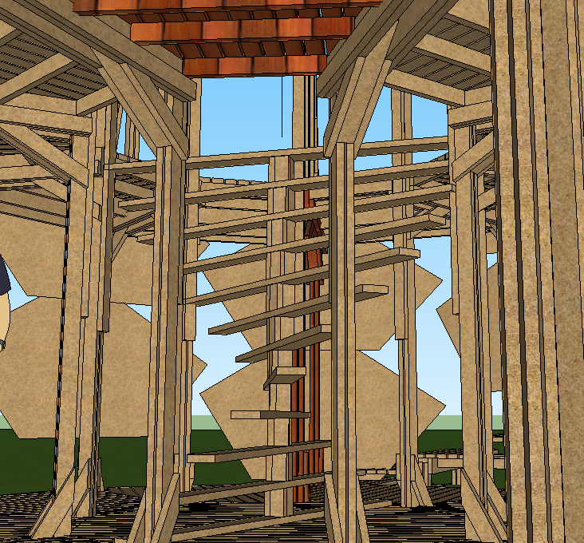

PINE Cononagon
Misty Nickle206-853-1847
MistyNickle@gmail.com

Description
Brief
The shape of this effigy is based off a Pine Cone because pine cones spread their seed by fire. On the inside we will be playing with themes of light and dark, and mortality. It is a three storyThe participant story
This year we are attempting to lead participants through something like a story by having a very clear entrance which winds it's way through scenes before reaching a soft end. The story starts off with a set of stairs that wrap around the build and lead into an entrance on the back....Planned Features
Forest, Underground, Cloud lounge, Flame canon spires, Fire garden, Ambience, Afterlife Performers, Water FeatureProcess
Management
Multiple teams: flame fx, decor, drama, build, fluff.Build/Schedule
Here is the current plan for our order-of-operations: - 1F Arches - 1F Deck - 1F Spiral Staircase - 3F Arches - 3F Decor - 1F Steep outter staircase - 2F Deck - 1F Decor - 2F Arches - 2F DecorCriteria
Safety -Transportation -
Burn -
Burn-Ban -
Cleanup -
Budget -
Materials -
Rentals -
Attachments
Front Center

Top Down
3/4 High Front Left
3/4 High Back Right
Back Center

DNA Staircase (1st Floor)
Model is incomplete, missing strength.
2nd Floor